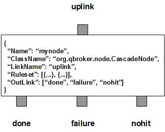

CascadeNode picks up a JMS messages from the input XQueue and extracts the group key from it. It looks up the group cache for a cached list of rulesets with the group key. If the list is not empty, CascadeNode just loops through the list and applies each filter on the message. If a ruleset gets a hit, it will be used to evaluate the message. Therefore, the incoming message may be evaluated by multiple rulesets in the natural order.
There are three fixed outlinks, done, failure and nohit. All evaluated message will be routed to the outlink of done. Any failure will cause the incoming message routed to the outlink of failure. If there is no ruleset got hit, the incoming message will be routed to the outlink of nohit.
CascadeNode contains a number of rulesets. According to GroupKeyTemplate, each ruleset defines its own group key with a set of property patterns. The group key will be used to group rulesets. A ruleset may have an active time window for blackout. The number of the rulesets and their content may change dynamically on demand.
CascadeNode always creates two extra rulesets. The first one is the nohit ruleset for those messages whose group key has no hit. The second is the candidate ruleset for all messages whose group key has at least one hit. Since a candidate message may hit any number of rulesets, the stats count for the candidate ruleset will be the number of the incoming messages rather than the number of the rules. The number of rulesets will be counted by their own rulesets. The DisplayMask and StringProperty of the ruleset are used to display the details of cascated messages for the ruleset. The stats of the rules are stored in the fields of RULE_SIZE, RULE_COUNT and RULE_PEND. RULE_PEND is for number of cached rulesets, RULE_SIZE for number of preliminary hits, whereas RULE_COUNT is for number of real hits.
SessionTimeout determines how often to clean up expired group keys from the cache. If SessionTimeout is larger than zero, any cached group keys will be expired if their idle time exceeds SessionTimeout. Those expired group keys will be removed from the cache in next session to save resources. GroupKeyTemplate defines a template with multiple property names delimited by a space char. It is required for extracting group key from a message.
You are free to choose any names for all three outlinks. But CascadeNode always assumes the first outlink for done, the second for failure, the last for nohit.
Apart from the common properties, there are some implementation specific properties for CascadeNode.
| Property Name | Data Type | Requirement | Description | Examples |
|---|---|---|---|---|
| GroupKeyTemplate | string | mandatory | template to build the group key | ##site## ##name## |
| SessionTimeout | integer | optional | timeout in second for a session | 7200 (default: 86400) |
The cascade operation is executed via the pre-defined rulesets. Therefore, the configuration of the rulesets is critical to the operations of CascadeNode. Here are complete properties of rulesets for CascadeNode.
| Property Name | Data Type | Requirement | Description | Examples |
|---|---|---|---|---|
| Name | alphanumeric with no spaces | mandatory | name of the ruleset | event |
| ResetOption | integer | optional | option to reset properties | 2 (default: 0) |
| FieldName | string | optional | name of the property to be parsed | message |
| ParserArgument | list | optional | list of configurations for parser | see example |
| JSONFormatter | list | optional | list of JSON format operations | see example |
| JSONPath | object | optional | JSON Path | see example |
| FormatterArgument | list | optional | list of post format operations | see example |
| ActiveTime | list | optional | active time window for the subscription | see example |
| JMSPropertyGroup | list | optional | list of pattern groups on properties to select messages | see example |
| XJMSPropertyGroup | list | optional | list of pattern groups on properties to exclude messages | see example |
| StringProperty | map | optional | for logging of message properties | see example |
| DisplayMask | integer | optional | mask for loggings | 64 (default: 0) |
Here is an example of CascadeNode:
{
"Name": "node_cascade",
"ClassName": "org.qbroker.node.CascadeNode",
"Operation": "cascade",
"Capacity": "1024",
"LinkName": "data",
"XAMode": "1",
"MaxNumberRule": "4096",
"SessionTimeout": "86400",
"GroupKeyTemplate": "##name## ##group## ##customer## ##service## ##hostname##",
"DisplayMask": "7",
"Debug": "1",
"Ruleset": [{
"Name": "parser",
"JMSPropertyGroup": [{
"name": "^syslog$",
"JMSType": "^\\/var\\/log$",
"message": " \\w+\\[\\d+\\]:"
}],
"FieldName": "message",
"ParserArgument": [{
"component": "^\\w+ \\d+ \\d+:\\d+:\\d+ \\w+ (\\w+)\\["
}]
},{
"Name": "component",
"JMSPropertyGroup": [{
"name": "^syslog$",
"JMSType": "^\\/var\\/log$",
"component": "."
}],
"JSONFormatter": [{
"JSONPath": ".new_tags",
"Operation": "merge",
"Template": "component:##component##",
"DataType": "string"
}],
}],
"OutLink": ["null", "failure", "nohit"]
}
where it builds the group key from five properties of the messages. The node
has two rulesets. The first ruleset is to parse content of the property,
message. Then it builds the new tag and merges it to the JSON
payload.
CascadeNode also supports a group of rulesets based on ConfigList or ConfigTemplate. ConfigList manages a list of configurations stored in a separate repository. ConfigTemplate manages a list of configurations sharing a same property template. Please check EventDispatcher for the details about ConfigList. Here we just focus on ConfigTemplate.
A ConfigTemplate is a Template to generate a group of configuration properties based on a given item list. The item list can be static or dynamic. CascadeNode uses ConfigTemplate to manage a group of rulesets or subscriptions via an item list. So you do not have to define each ruleset one by one. Here is an example:
{
...
"Ruleset": [{
"Name": "sub_main",
"Template": "##path##",
"RuleType": "ConfigTemplate",
"Property": {
"Name": "sub_main",
"JMSPropertyGroup": [{
"name": "^by2min$"
}],
"URITemplate": "##path##"
},
"Item": [
"/full/P.full.json",
"/full/H.full.json",
"/full/S.full.json",
"/full/H.keyRaces.json",
"/full/combined.latest.json",
"/flipper/P.json"
]
}],
...
}
where ##path## is the only variable or the place holder referenced in
both Template and URITemplate. It will be replaced by each item of the list.
URITemplate is used to build pubURI for the rule, whereas Template is used to
generate the unique name of the rule. As you can see, it has a list of items
and a template to generate rulesets. So you do not need to define the ruleset
for each one of them.